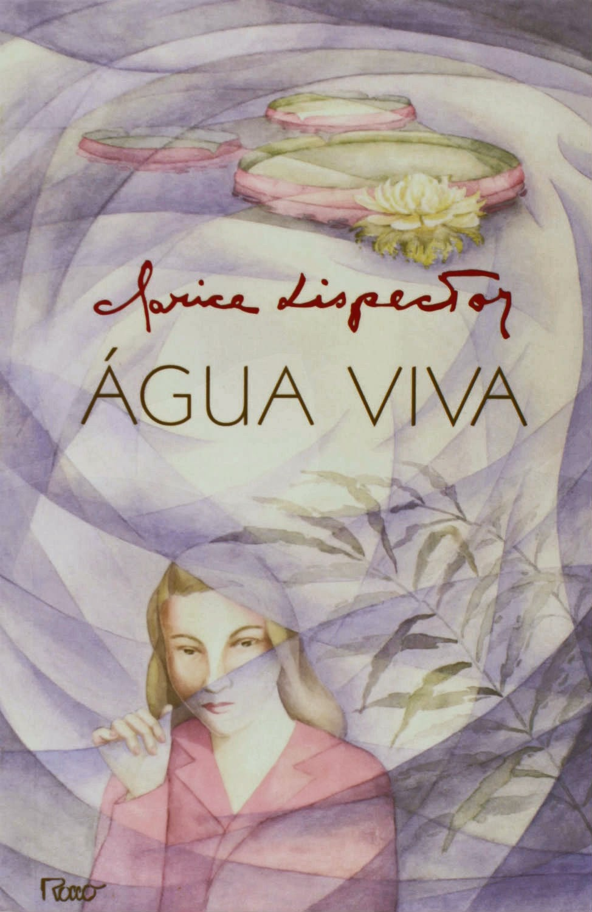

A trama do livro é tênue, o que faz dele "um romance sem romance". Um eu, declinado no feminino, escreve a um tu, no masculino, expondo suas ânsias e procuras, num discurso de fluidez ininterrupta entre o delírio, a confissão e a sedução.
"Eu sou antes, eu sou quase, eu sou nunca. E tudo isso ganhei ao deixar de te amar."
Desde seus primeiros textos Clarice Lispector anuncia um brilhante projeto literário. Água viva, publicado em 1973, adensa o processo característico de sua narrativa, enfatizando-lhe a fragmentação, a contaminação do romanesco com o lírico e o abrandamento das linhas descritivas e representacionais, recursos menos acentuados em outras de suas obras, anteriores e posteriores.
Título
Água viva
Autora
Clarice Lispector
Publicação
1973
Editora
Rocco
Gênero
Romance experimental
Páginas
96